MyWorkPlan User's Guide
MyWorkPlan plans tasks, schedules, resources and costs and tracks progress, much like Microsoft Project. It runs with the same screens as a desktop app on Windows, macOS and Linux and in a web browser.
This guide is organised by task. Menu and command names are written exactly as the program shows them (for example Task › Insert task is the "Insert task" command of the "Task" menu). The pictures are captured from the tutorial.
한국어 설명서: UsersGuide.md
Getting started
First start
On the first start the Welcome to MyWorkPlan window opens.
| Button | What it does |
|---|---|
| Start the tutorial | Starts the tutorial, which shows every feature step by step on a sample project |
| Open the sample | Opens the "Website Redesign (sample)" project |
| Later | Closes the window. The tutorial is always at Help › Tutorial (F11) |
Only one MyWorkPlan runs at a time. Starting it again while it is running shows an error and the new copy closes (see Troubleshooting).
Start page
The start page shows when no project is open (and from the Home button at the start of the menu bar, Ctrl+Shift+H). Its background keeps moving.
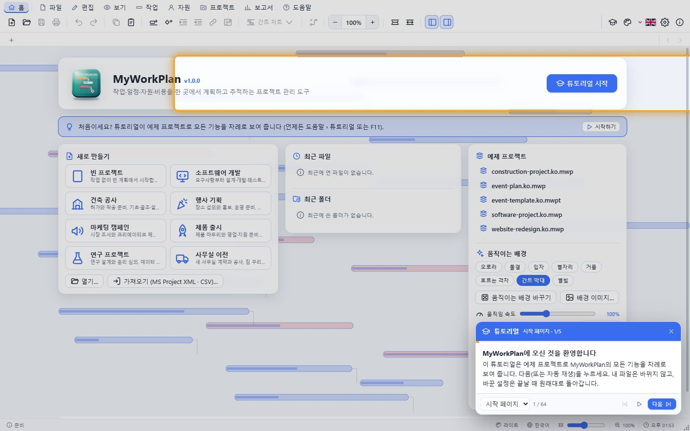
| Area | Contents |
|---|---|
| Top | Program name and version, Start the tutorial. Until the tutorial has been finished, a hint banner shows too |
| New | Blank project and 7 templates (Software development · Building construction · Event planning · Marketing campaign · Product launch · Research study · Office move), Open…, Import (MS Project XML · CSV)… |
| Recent files · Recent folders | The last 10 files and 10 folders. ✕ removes one entry, Clear all · Clear all folders remove them all |
| Sample projects | Installed samples (website redesign · software · construction · event plan · event template) |
| Moving background | Pick one of 20 animations, Change moving background (random), Background image…, Motion speed |
| Help | User's guide, Keyboard shortcuts… |
| Bottom | Show the start page when starting check box |
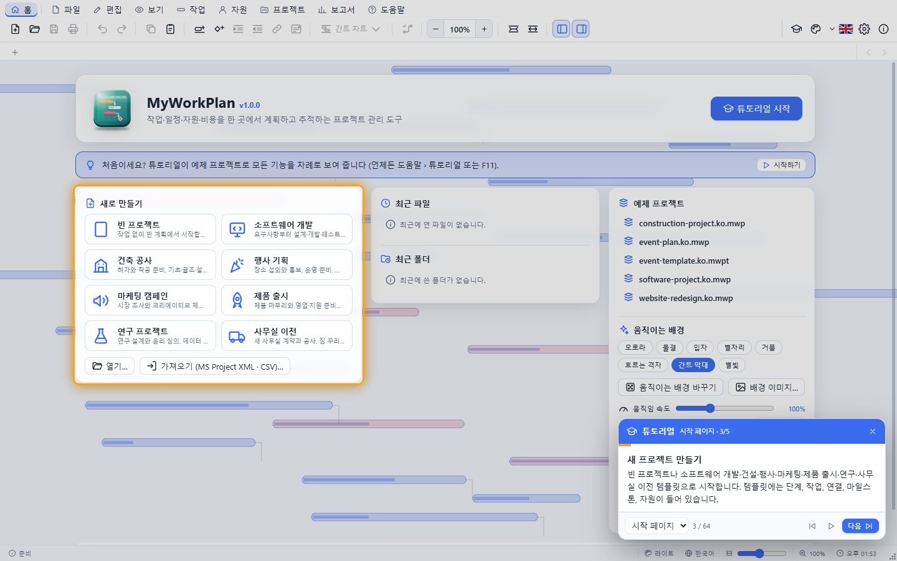
Templates come with phases (summary tasks), tasks, links, milestones and resources. A project made from a template asks for a new file name the first time it is saved.
The sample project
Open "Website Redesign" under Sample projects: the task table is on the left, the Gantt chart on the right. Black brackets are summary tasks, diamonds are milestones and red bars are critical tasks.
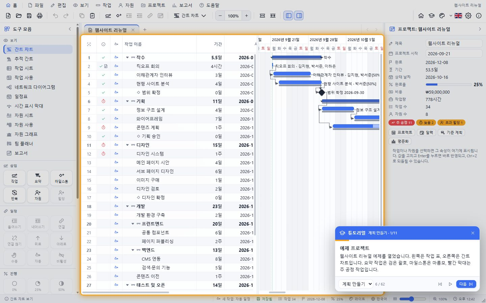
Tutorial
Start it with Help › Tutorial (F11), the graduation-cap toolbar button or Start the tutorial on the start page. It opens a sample project and shows the features one by one in 64 steps.
- Move with Next · Previous step, or press Auto play (▶).
- Choose a chapter jumps to Start page · Building a plan · Scheduling · Resources and costs · Tracking · Views · Reports · Files and printing · Customizing · Help.
- The tour box can be dragged. Esc or ✕ ends the tutorial.
- Your files are not changed, and the settings the tutorial changes (theme, language, background…) are put back at the end.
Tutorial document — a document with every tutorial step and its screen can be read inside the program. Open it from Help › Tutorial document on the home screen or in the Help menu: it fills the middle of the window, and the bar on top jumps to a chapter, switches 한국어/English, starts the tutorial or opens the document in a browser. Home takes you back.
The window
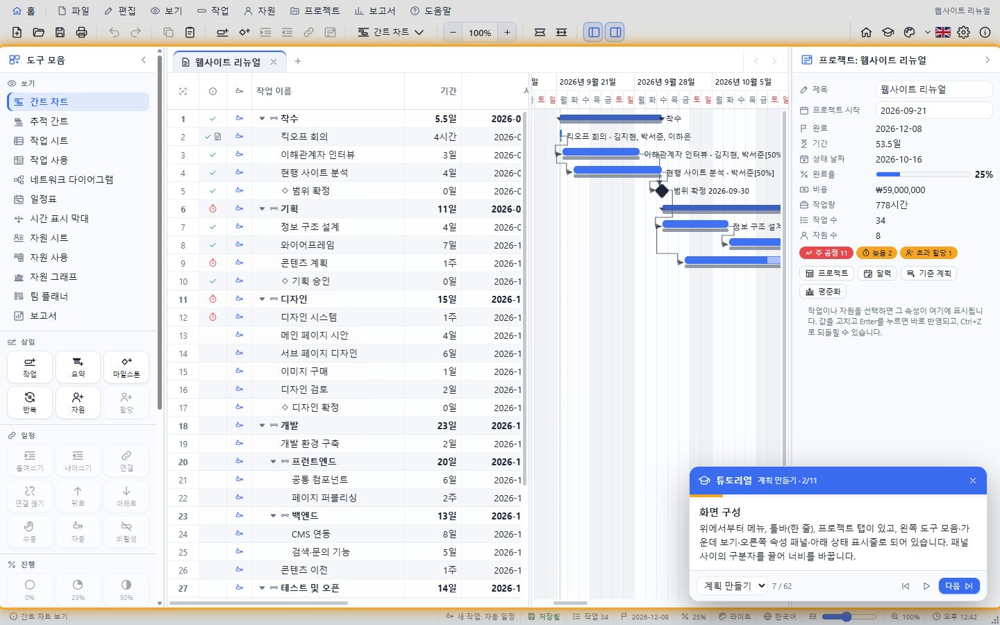
From the top: the menu bar and the toolbar (one line); right under them the Tools panel on the left and the Properties panel on the right. Between the two panels, in the middle, are the project tabs with the view below them, and the status bar is at the bottom. Drag the separators between the panels to resize them, and the bottom-right corner to resize the window. The window never gets narrower than the toolbar needs.
Menu bar
The Home button at the start of the menu bar (Ctrl+Shift+H) goes back to the start page at any time; open projects stay in their tabs.
| Menu | Commands |
|---|---|
| File | New project · Open… · Start page · Recent files… · Recent folders · Clear all recent files and folders · Save · Save as… · Save all · Save as template… · Import (MS Project XML · CSV)… · Export to MS Project XML… · Export to CSV… · Export Gantt chart as picture (PNG)… · Print… · Close tab · Close all tabs · Exit |
| Edit | Undo · Redo · Cut · Copy · Paste · Fill down · Delete · Select all · Clear selection · Find… · Replace… · Go to… |
| View | Switch view and the 12 views · Table (column set) · Choose columns… · Filter · Clear filter, group and sort · Group · Sort · Highlight instead of filter · Show summary tasks only (collapse all) · Show all subtasks (expand all) · Zoom in · Zoom out · Zoom to 100% · Zoom in timescale · Zoom out timescale · Entire project · Scroll to task · Go to today · Show critical path · Show slack · Show baseline bars · Show progress line · Show/hide tool panel · Show/hide properties panel · Status bar · Random theme · Choose theme · Switch language · Change moving background · Background image… · Turn background off |
| Task | Insert task · Insert summary task · Insert milestone · Recurring task… · Indent (make subtask) · Outdent · Move up · Move down · Link tasks · Unlink tasks · Information… · Notes… · Add to timeline · 0% complete … 100% complete · Mark on track · Update tasks… · Manually schedule · Auto schedule · Inactivate task |
| Resource | Add resource · Resource information… · Assign resources… · Level all · Clear leveling · Leveling options… · Next overallocation · Resource Sheet · Resource Usage · Resource Graph · Team Planner |
| Project | Project information… · Change working time… · Project statistics… · Set baseline… · Clear baseline… · Update project… · Status date… · Calculate now · Insert another project… |
| Report | Project overview · Cost overview · Work overview · Burndown · Critical tasks · Late tasks · Upcoming tasks · Milestone report · Resource overview · Export report (HTML, Markdown, Word, PDF) · Copy report · Print… |
| Help | Tutorial · User's guide · Keyboard shortcuts… · Settings… · About… |
Every menu item shows an icon and its shortcut, and menus may extend outside the main window. Commands that cannot be used right now are dimmed.
Toolbar
| Where | Buttons |
|---|---|
| Left | New project · Open · Save · Print │ Undo · Redo │ Copy · Paste │ Insert task · Insert milestone · Indent · Outdent · Link tasks · Information │ Switch view (current view name ▾) │ Zoom [−] 100% [+] │ Zoom out / in timescale │ Tool panel · Properties panel |
| Right | Tutorial (graduation cap) · Theme (random) + ▾ · Language (flag) · Settings · About (ⓘ) |
Every button has a tooltip. The Undo and Redo tooltips say what will be undone (for example "Undo: Change duration").
Project tabs
Each project gets a tab. When there are many, scroll them with the arrows at the ends or the mouse wheel; Ctrl+Tab goes to the next tab. Double-clicking the empty part of the tab strip creates a new project. A project with unsaved changes shows ● after its name at the right of the menu bar.
Tools panel (left)
| Section | Contents |
|---|---|
| Views | The 12 view buttons |
| Insert | Task · Summary · Milestone · Recurring · Resource · Assign |
| Schedule | Indent · Outdent · Link · Unlink · Up · Down · Manual · Auto · Inactive |
| Progress | 0% · 25% · 50% · 75% · 100% · On track |
| Data | Search box (task names, notes and resources), Filter · Group · Sort · Table lists, Highlight instead of filter, the number of tasks shown and Clear |
| Show on chart | Show critical path · Show slack · Show baseline bars · Show progress line |
Properties panel (right)
Shows the properties of the selection and lets you change them in place. Change a value and press Enter; Ctrl+Z undoes it.
| Selection | Shown |
|---|---|
| Nothing | The project: title, project start, finish, duration, status date, % complete, cost, work, number of tasks and resources, critical / late / overallocated / conflict counts, buttons (Project · Calendar · Baseline · Level) |
| One task | Task name, WBS, duration, start, finish, % complete slider, predecessors, resource names, mode, constraint type and date, deadline, priority, cost, work, total slack, badges (critical · running late · overallocated · finish variance), notes, bar color, More… · Assign · Scroll to |
| Several tasks | Count, start and finish, cost, Link · Unlink · Indent · Outdent · 0% · 50% · 100% · Inactive · Info |
| A resource | Name, type, initials, group, max. units, std. rate, cost/use, work, cost, assigned tasks |
| A link | Predecessor, successor, type, lag, Delete link |
Status bar
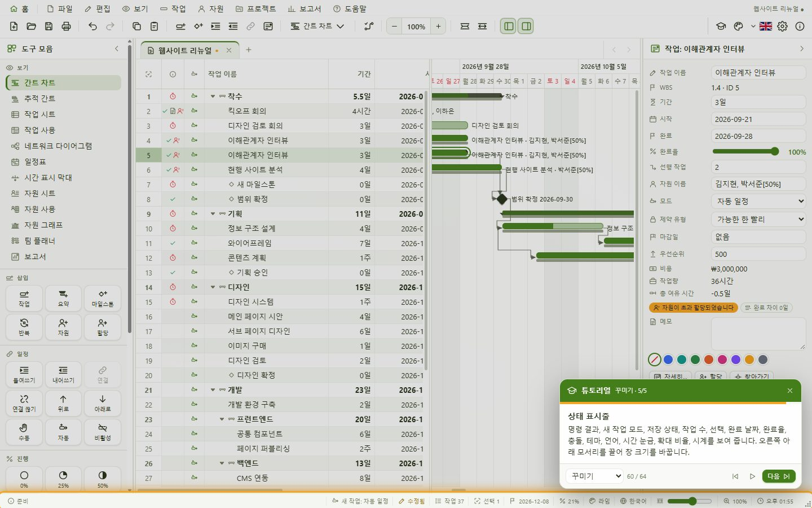
From the left: the result of the last command (e.g. "Marked 3 tasks 50% complete."), New tasks: auto scheduled / manually scheduled (click to change), Saved / Modified, task count, selection count, project finish date, % complete, conflicts, Filter on, theme name, language, timescale slider, zoom and a clock. View › Status bar hides or shows it.
Right-click menus
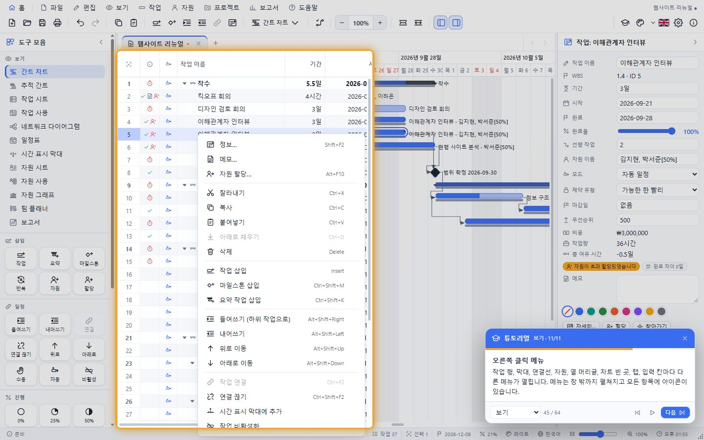
Each place has its own menu.
| Where | Menu |
|---|---|
| Task row | Information… · Notes… · Assign resources… · Cut · Copy · Paste · Fill down · Delete · Insert task / milestone / summary task · Indent · Outdent · Move up / down · Link tasks · Unlink tasks · Add to timeline · Inactivate task (summary tasks: collapse / expand subtasks) |
| Gantt bar | Information… · Notes… · Update tasks… · 0% / 50% / 100% complete · Mark on track · Link · Scroll to task · Add to timeline · Manually / Auto schedule · Inactivate · Cut · Copy · Delete |
| Link line | Edit link… · Finish-to-Start (FS) · Start-to-Start (SS) · Finish-to-Finish (FF) · Start-to-Finish (SF) · Delete link |
| Empty chart area | Zoom in / out timescale · Entire project · Go to today · what the chart shows · Export as picture · Print · Change moving background |
| Column header | Sort by this column · By ID (default) · Choose columns… · Table (column set) · Hide this column · Reset column width |
| Resource row | Resource information… · Cut · Copy · Paste · Delete · Add resource · Level all · Next overallocation · Resource Graph · Resource Usage |
| Tab | Save · Save as… · Save as template… · Project information… · Print… · Close tab · Close all tabs · New project |
| Report | The 9 reports · Export report · Copy report · Print… |
| Status bar | Status bar · Zoom in · Zoom out · Zoom to 100% · Zoom in / out timescale · Theme · Language |
| Text field | Undo typing · Cut · Copy · Paste · Select all |
Popup windows
Windows such as Task information, Settings and Print preview are separate windows in the desktop app. They can be moved outside the main window and close with it. In the web version and during the tutorial they float inside the main window.
Building a plan
Adding tasks
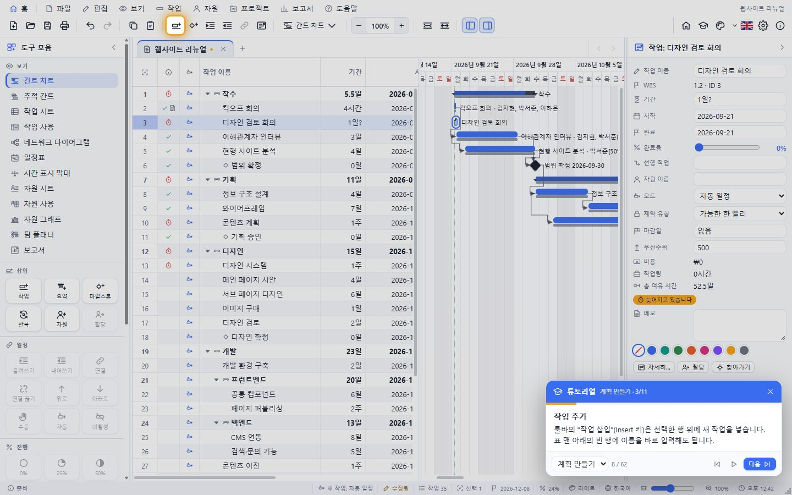
- Task › Insert task (
Insert) puts a new task above the selected row and lets you type its name right away. - Typing a name into the empty row at the bottom of the table ("Type a new task name here") also creates a task.
- Insert summary task (
Ctrl+Shift+K) makes a summary task over the selected tasks. - Double-click a cell or press
F2/Enterto edit it. While editing,Entermoves down,Tabmoves right andEsccancels. - Click a row number to select (
Ctrl+click: several,Shift+click: a range) and drag rows up or down to move them; dragging left or right changes the outline level. - Delete (
Delete) removes the selected tasks and their subtasks, after asking (Settings › General › Ask before deleting).
Durations
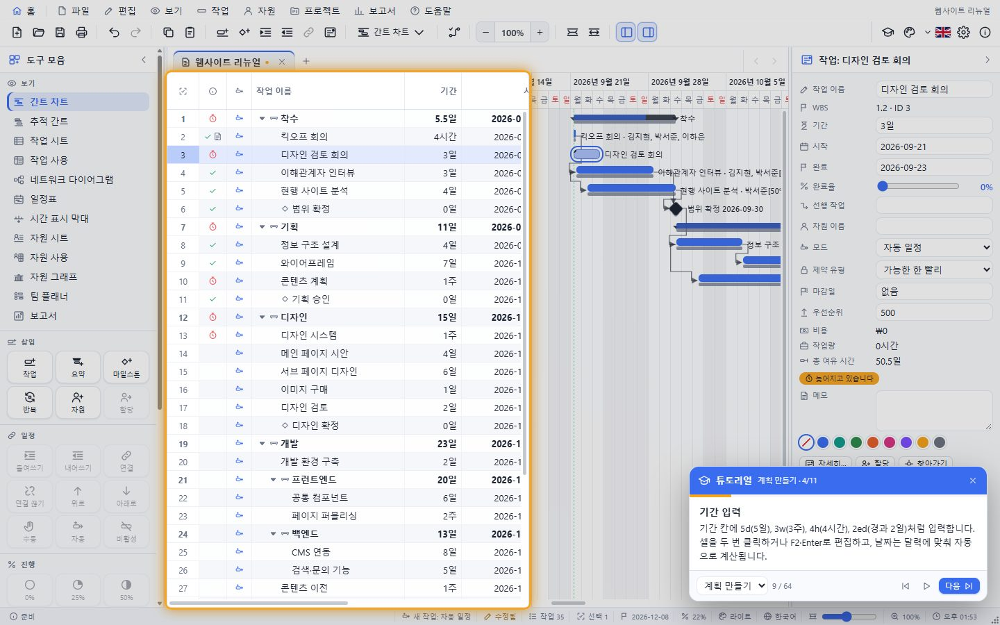
Type a number and a unit in the Duration column. Start and finish dates are calculated on the calendar automatically.
| Input | Meaning |
|---|---|
5d, 5 days | 5 working days |
3w, 3 weeks | 3 weeks |
4h, 4 hrs | 4 hours |
30m, 30 min | 30 minutes |
1mo, 1 month | 1 month |
2ed, 3eh | Elapsed time (nights and days off count): 2 elapsed days, 3 elapsed hours |
5d? | Estimated duration (shown with a question mark) |
0d | Milestone |
5 | A bare number means days |
How many hours make a day, a week and a month comes from Settings › Schedule: Hours per day (8) · Hours per week (40) · Days per month (20).
Milestones
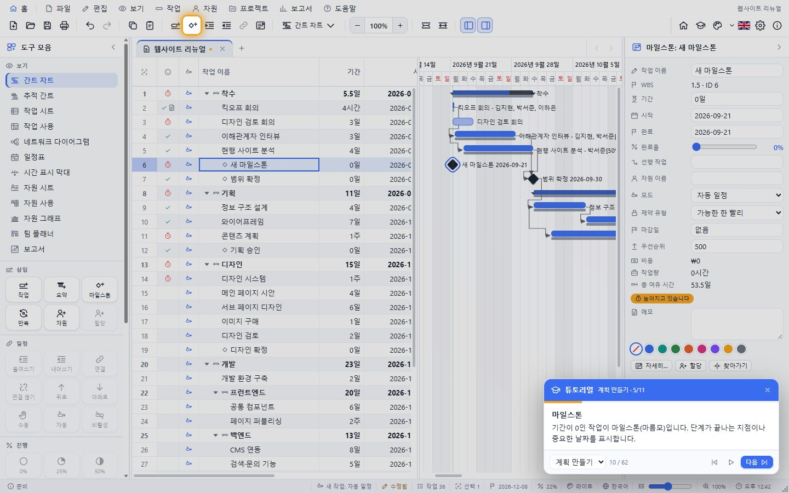
A task with a duration of 0 is a milestone (a diamond). Use Task › Insert milestone (Ctrl+Shift+M), type 0 as the duration, or turn on Mark as milestone in Task information.
Outline (summary tasks)
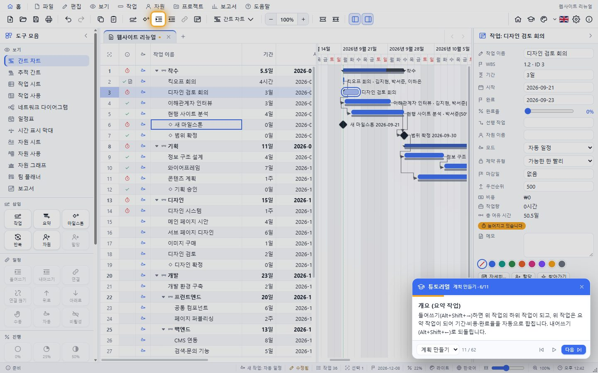
- Indent (make subtask) (
Alt+Shift+→) makes a task a subtask of the one above, which becomes a summary task that adds up duration, work, cost and % complete. - Outdent (
Alt+Shift+←) undoes it. Move up · Move down (Alt+Shift+↑/↓) move a task together with its subtasks. - The triangle before a summary task collapses and expands it. View › Show summary tasks only (collapse all) · Show all subtasks (expand all) do it for all of them.
- WBS codes (1, 1.1, 1.2 …) follow the outline automatically.
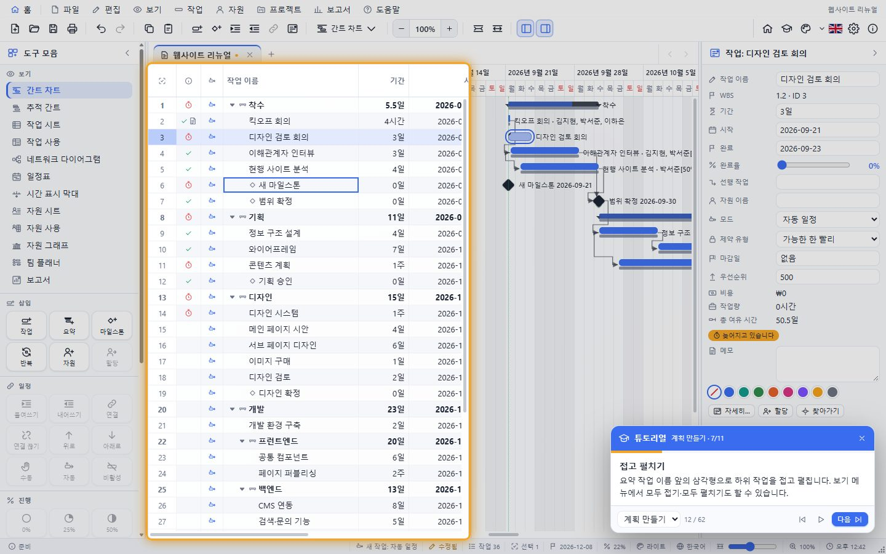
Links and lags
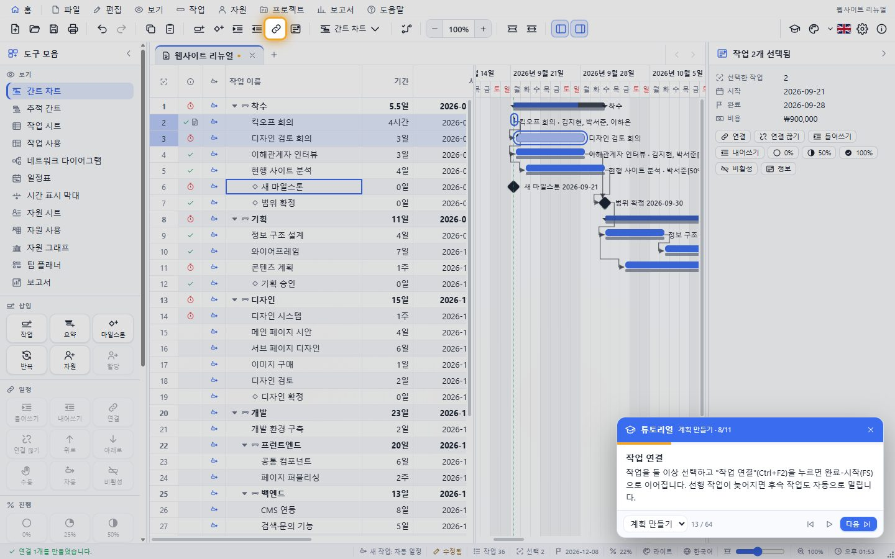
- Select two or more tasks and press Link tasks (
Ctrl+F2) to chain them finish-to-start from top to bottom. Unlink tasks (Ctrl+Shift+F2) removes the links of the selected tasks. - Dragging a Gantt bar up or down onto another bar links them too.
- The Predecessors column can be typed: task IDs with an optional link type and lag, separated by commas —
3,5SS+2d,7FF-1d,4FS+50%. - Double-click a link line for the Task dependency window; right-click it for a menu that changes the type at once.
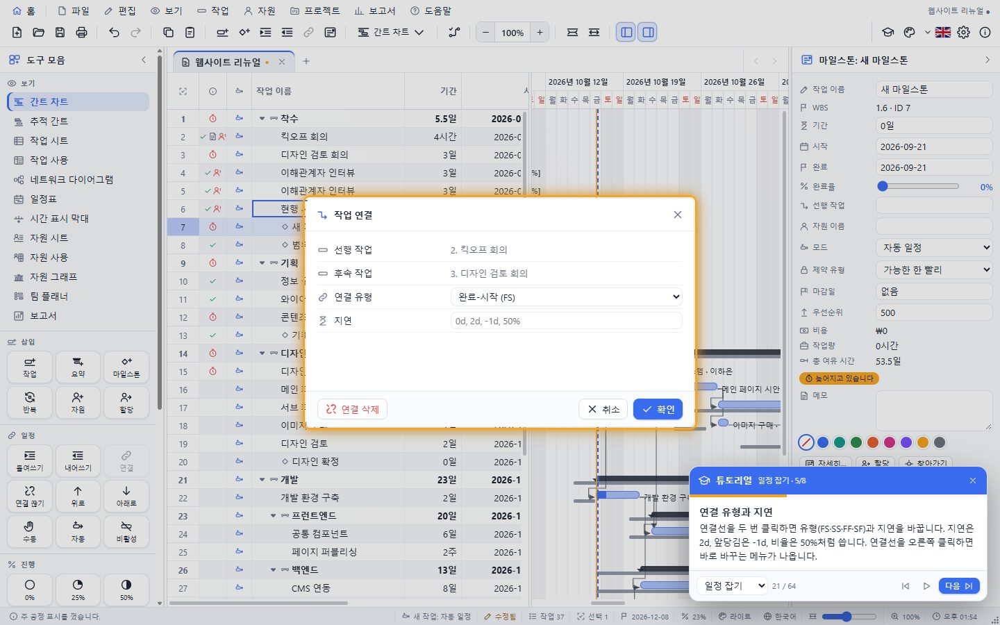
| Link type | Meaning |
|---|---|
| Finish-to-Start (FS) | The successor starts when the predecessor finishes (default) |
| Start-to-Start (SS) | The successor starts when the predecessor starts |
| Finish-to-Finish (FF) | The successor finishes when the predecessor finishes |
| Start-to-Finish (SF) | The successor finishes when the predecessor starts |
Write the Lag as 2d (2 days later), -1d (a 1-day lead) or 50% (half the predecessor's duration). A link on a summary task applies to every task inside it. Links that would make a loop, or link a summary task with its own subtask, are refused.
Dragging bars
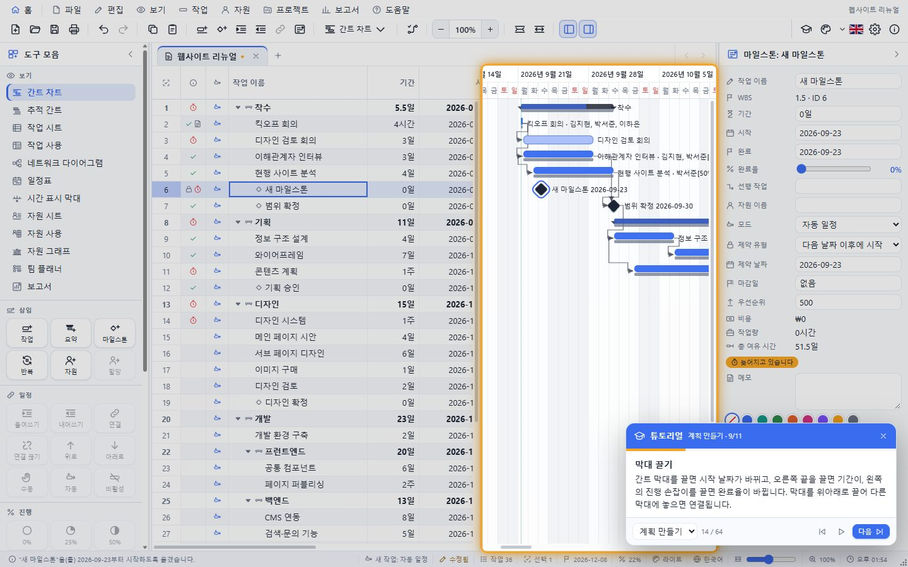
| Drag | Changes |
|---|---|
| The middle of a bar | The start date (the task gets a "Start no earlier than" constraint) |
| The right end of a bar | The duration |
| The progress handle at the left | % complete |
| A bar up or down onto another bar | Links the two tasks |
An empty chart area (or Ctrl+drag) | Moves the chart |
Double-click a bar for Task information.
Undo, copy and paste
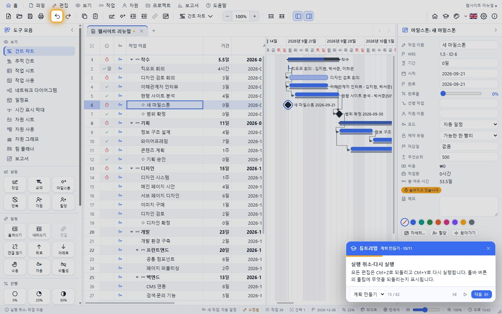
- Every edit is undone with
Ctrl+Zand redone withCtrl+Y(orCtrl+Shift+Z). Each tab (project) has its own history. Ctrl+C·Ctrl+X·Ctrl+Vcopy and move tasks (with their subtasks, links and assignments) or resources.- Lists copied from Excel or a text editor paste as tasks: indentation (two spaces or a tab) is the outline level and a value after a tab is the duration. Copied tasks paste into Excel as Name, Duration, Start and Finish columns.
- Fill down (
Ctrl+D): select several tasks, then a cell; the first task's value in that column is copied to the others.
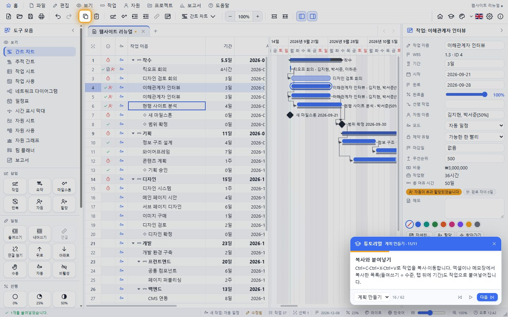
Task information
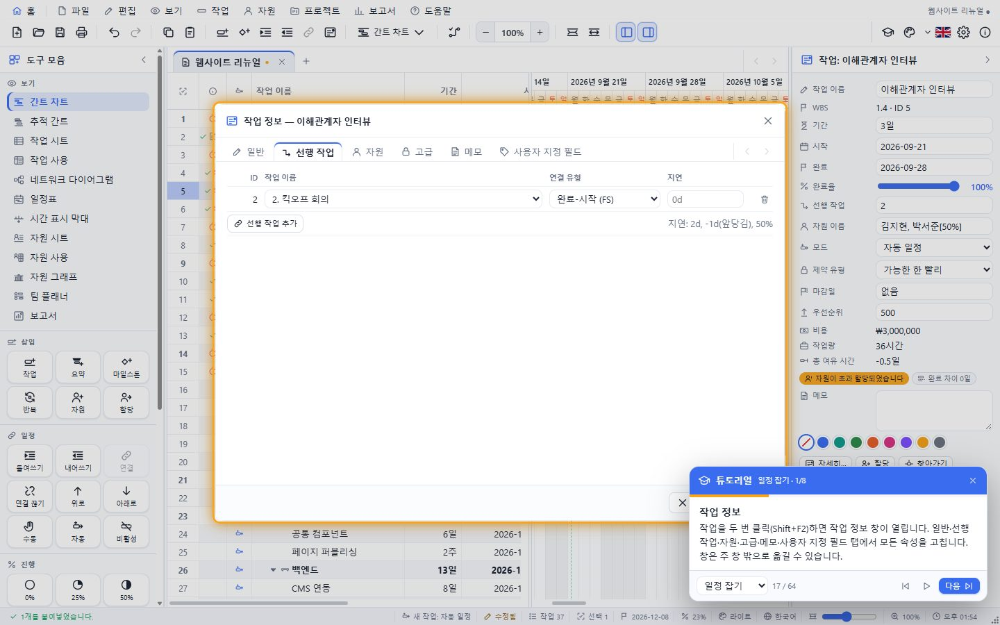
Double-click a task or use Task › Information… (Shift+F2). With several tasks selected it becomes Multiple task information: only the fields you change are applied to all of them.
| Tab | Fields |
|---|---|
| General | Name, duration and Estimated, % complete, priority (0–1000), schedule mode (auto / manual), start and finish (typed for manually scheduled tasks), Mark as milestone, Active |
| Predecessors | The predecessors (task · type · lag), Add predecessor, remove link |
| Resources | Assigned resources and units (work: %, material: quantity, cost: amount), Assign resource, remove assignment |
| Advanced | Constraint type and date, deadline, task type, effort driven, task calendar, fixed cost, WBS code |
| Notes | Notes, hyperlink (web address or file) |
| Custom fields | Text1–3, Number1, Flag1, bar color, Hide the Gantt bar, Show on the timeline |
Notes… opens this window on the Notes tab.
Recurring tasks
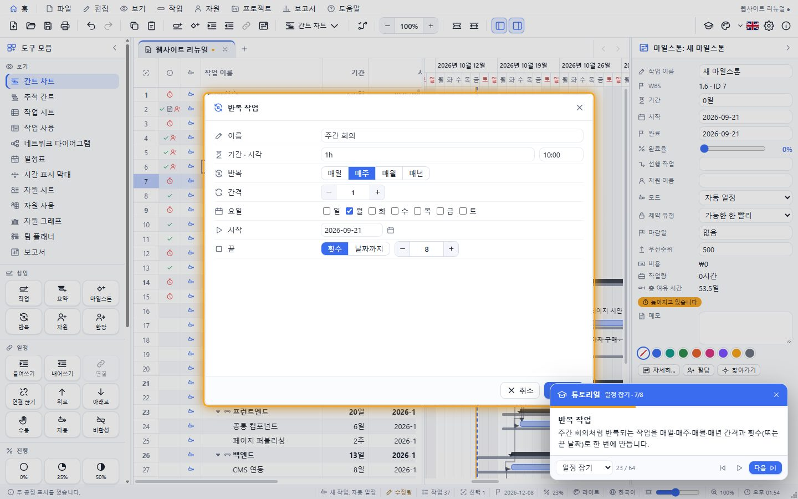
Task › Recurring task… creates repeating tasks such as a weekly meeting at once.
| Field | Contents |
|---|---|
| Name · Duration · time | e.g. Weekly meeting, 1h, start time 10:00 |
| Recurs | Daily · Weekly · Monthly · Yearly, Every (how many days, weeks or months) |
| On / Day | Weekly: the weekdays; monthly and yearly: the day of the month |
| Working days only | Daily: skip non-working days |
| Start · End | Start date; end After a number of Occurrences or By date (end date) |
The result is one summary task with a task per occurrence, each pinned to its day with a "Start no earlier than" constraint. The indicators column shows a recurring-task icon.
Other task commands
| Command | What it does |
|---|---|
| Inactivate task | Keeps the task but leaves it out of the schedule and costs (grayed). Press again to activate it |
| Add to timeline | Shows the task on the Timeline view |
| Bar color | Pick a bar color with the swatches in the properties panel or in Task information › Custom fields |
| Project › Insert another project… | Inserts the tasks of another file (.mwp · .mwpt · XML · CSV) under one summary task; resources with the same name are merged |
Scheduling
Auto and manual scheduling
- Auto scheduled tasks get their dates from links, constraints and calendars.
- Manually scheduled tasks stay on the start and finish you typed (drawn with a different bar).
- Switch the selected tasks with Task › Manually schedule · Auto schedule. New tasks follow New tasks: auto / manually scheduled on the status bar (click it) or Settings › Schedule › Mode of new tasks.
Constraints
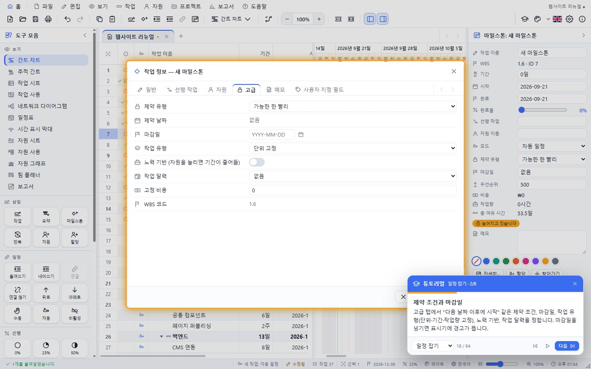
Set the Constraint type and Constraint date in Task information › Advanced (or the properties panel).
| Constraint type | Meaning |
|---|---|
| As soon as possible | Default. The earliest date the links allow |
| As late as possible | The latest date that delays neither successors nor the project finish |
| Start no earlier than | Does not start before the date |
| Start no later than | Starts by the date |
| Finish no earlier than | Does not finish before the date |
| Finish no later than | Finishes by the date |
| Must start on | Starts on the date |
| Must finish on | Finishes on the date |
When links and constraints disagree (e.g. a predecessor makes "Must start on" impossible), the status bar shows a conflicts count and the indicators column a warning. With Project information › Tasks always honor their constraint dates on, the constraint wins; off, the links win.
Deadlines
A Deadline does not move the task, but it limits the late dates, and a task finishing after its deadline gets "The deadline has been missed" in the indicators column. The Gantt chart marks the deadline.
Calendars and working time
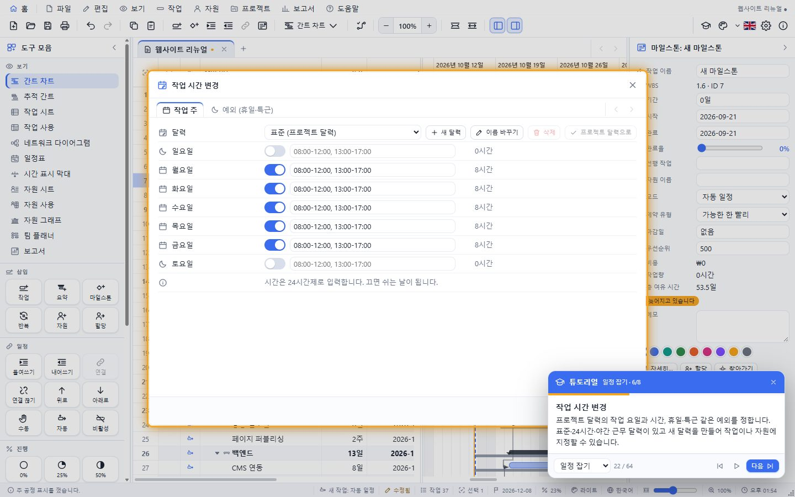
Edit calendars with Project › Change working time….
- Built-in calendars: Standard (Mon–Fri 08:00-12:00, 13:00-17:00), 24 Hours and Night Shift.
- New calendar · Rename · Delete · Use as project calendar manage them.
- Work week tab: a Working day switch and working times per weekday (e.g.
08:00-12:00, 13:00-17:00, 24-hour clock). - Exceptions (holidays, extra work) tab: name, start, end and times, then Add. Empty times make a day off, times make extra working time.
- A task uses its own Task calendar, else the calendar of its assigned work resource, else the project calendar.
Critical path and slack
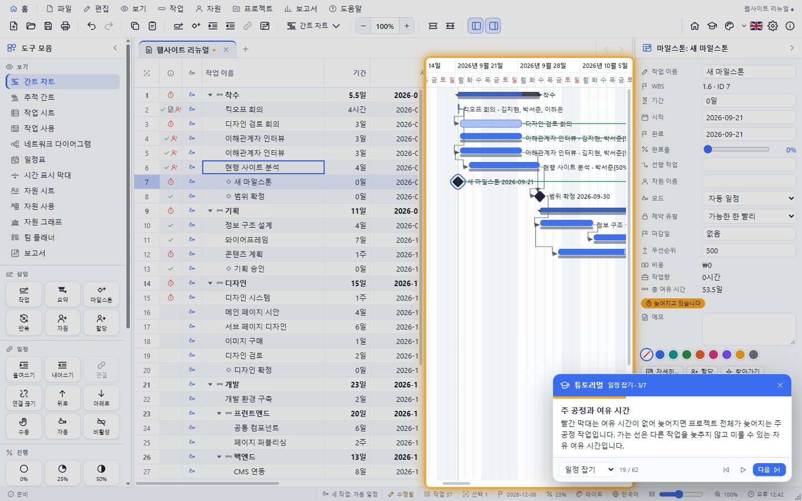
- Critical tasks (red bars) have no slack: any delay delays the project finish. View › Show critical path turns the colouring on and off.
- Show slack draws free slack (how far a task can slip without delaying others) as a thin line after the bar.
- Total Slack, Free Slack and Early / Late Start / Finish are in the Schedule table.
- Project information › Critical when slack is at most (days) widens the critical path (default 0 days).
Find critical path button — the Find critical path toolbar button (Ctrl+Shift+P, also in the Project menu) is a toggle. Pressing it recalculates the schedule front to back (earliest start and finish) and back to front (latest start and finish), then traces the tasks without slack into start-to-finish chains. Critical tasks and links turn red, everything else fades, and the chart scrolls to where the path begins. The status bar shows how many tasks are critical, and the message gives the chain (for example 12. Design system → … → 34. Project close) and the finish date. Press it again, or the critical item in the status bar, to turn it off.
Schedule from and project information
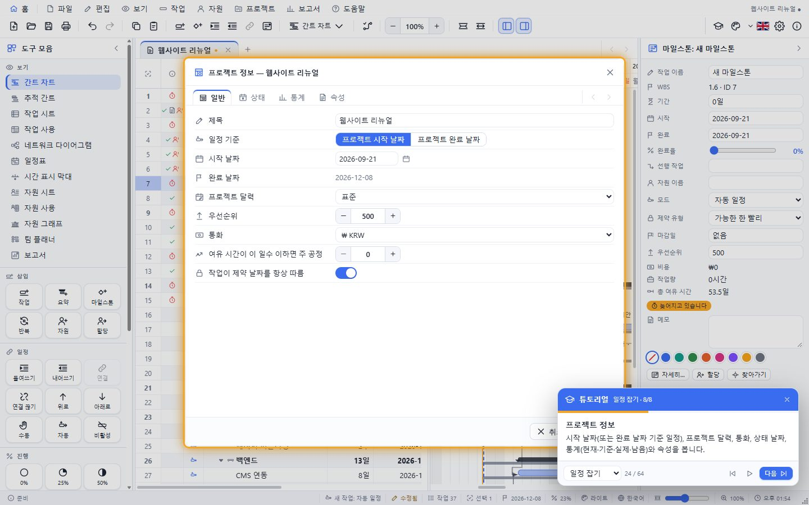
Project › Project information…
| Tab | Fields |
|---|---|
| General | Title, Schedule from (Project start date / Project finish date), start date or finish date, project calendar, priority, currency (₩ · $ · € · ¥ · £), critical slack, honor constraint dates |
| Status | Status date, today, % complete, late / critical / conflict counts |
| Statistics | Current · baseline · actual · remaining start, finish, duration, work and cost; numbers of tasks, milestones and resources |
| Properties | Subject, author, manager, company, category, keywords, comments |
With Schedule from set to "Project finish date" the schedule is calculated backwards from the finish date and every task is placed as late as possible. Project statistics… opens this window on the Statistics tab, Status date… on the Status tab.
Calculate now
The schedule is recalculated after every edit. Project › Calculate now (F9) refreshes the values that depend on today's date (late tasks and so on).
Resources and costs
Resource Sheet
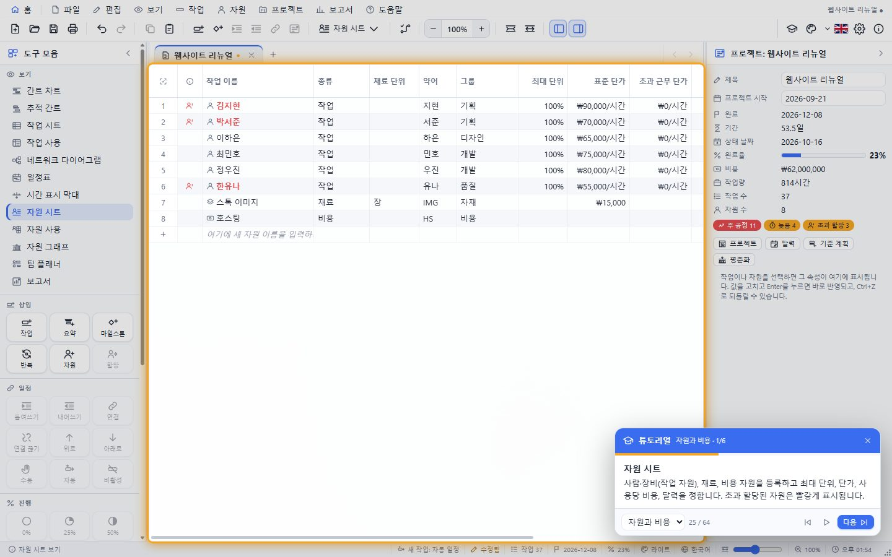
Enter resources in the Resource › Resource Sheet view: type a name into the empty bottom row or press Add resource (Ctrl+Shift+R).
| Type | Used for | Cost |
|---|---|---|
| Work | People and equipment. Max. units (100% = one person full time), calendar | Work (hours) × Std. rate + Cost/Use |
| Material | Things used by quantity, like cement or paper. Material label (e.g. tons) | Quantity × Std. rate + Cost/Use |
| Cost | Amounts only, like travel or rent | The amount entered on the assignment |
Double-click a resource for the Resource information window (General · Costs · Assignments · Notes tabs). Overallocated resources show in red.
Assigning resources
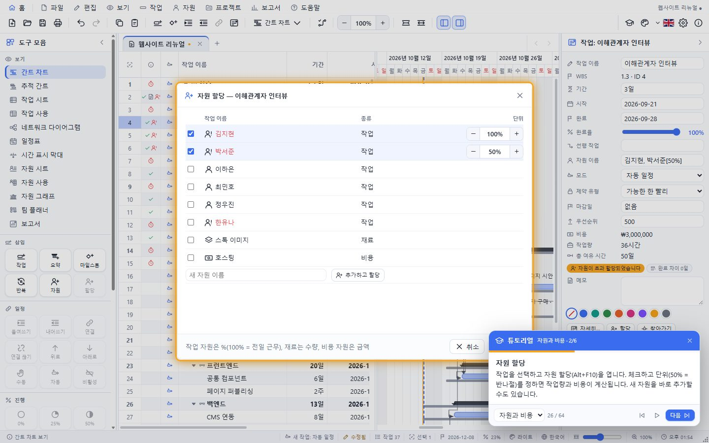
Select tasks and open Resource › Assign resources… (Alt+F10). Tick resources and set their units (work resources in %, 50% = half time); work and cost are calculated. Type a new resource name at the bottom and press Add and assign to create and assign it at once.
The Resource Names column can also be typed, e.g. Kim, Lee[50%]; unknown names become new work resources. Summary tasks get no resources.
Task types and effort driven
Set them in Task information › Advanced.
| Task type | When the duration changes |
|---|---|
| Fixed units (default) | Work follows |
| Fixed duration | Only the duration changes |
| Fixed work | Work stays, the units change |
With Effort driven (more resources shorten the task) on, adding work resources shortens the task so that the total work stays the same (not for fixed-duration tasks).
Costs
- Task cost = the cost of its assignments + Fixed cost. Summary tasks and the project add up their subtasks.
- The Cost table shows fixed cost, cost, baseline cost, cost variance, actual cost and remaining cost. Actual cost follows % complete.
- Pick the currency symbol in Project information › Currency.
Overallocation
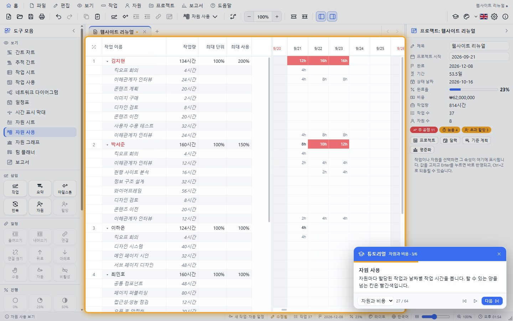
A resource is overallocated when more work overlaps on a day than it can do (max. units × that day's working time).
- It is red in the Resource Sheet, and its tasks get "A resource is overallocated" in the indicators column.
- The Resource Usage view shows the days over the limit in red.
- The Resource Graph view shows one resource's work per day as columns against its availability as a line (per day / per week).
- Resource › Next overallocation jumps to the next overallocated task.
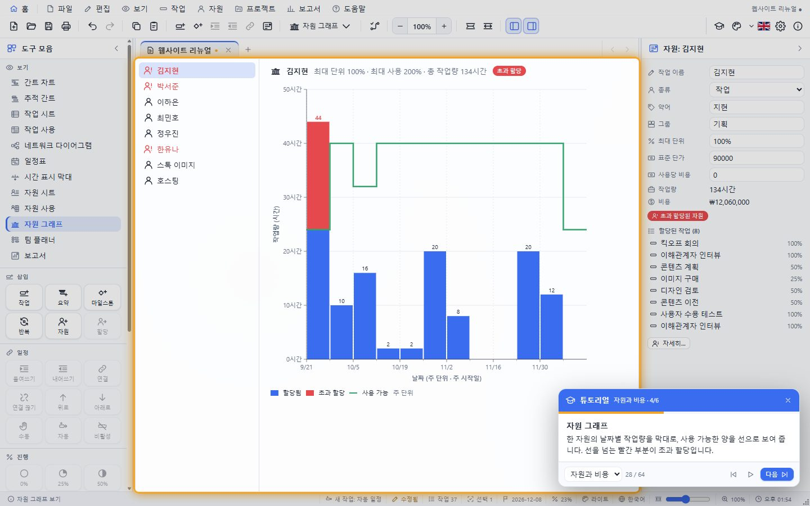
Resource leveling
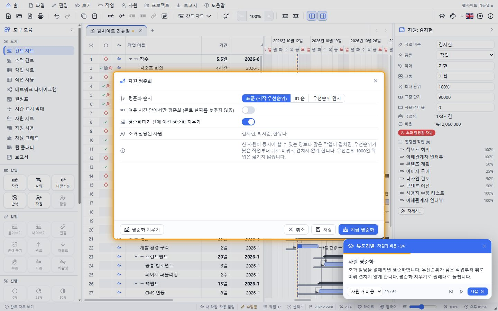
Resource › Level all delays lower-priority tasks until no resource is overallocated. The delay goes into the Leveling Delay field; Clear leveling puts the tasks back (only the selected ones when tasks are selected).
The Leveling options… window:
| Field | Contents |
|---|---|
| Leveling order | Standard (start, priority) · ID only · Priority first |
| Level only within available slack (keep the finish date) | No move that would delay the project finish |
| Clear previous leveling first | On by default |
| Overallocated resources | The resources overallocated now |
| Buttons | Clear leveling · Save (options only) · Level now |
Tasks with priority 1000, manually scheduled tasks, tasks already started and "Must start / finish on" tasks are never moved. When some overallocation cannot be solved, the remaining resources are named on the status bar.
Team Planner
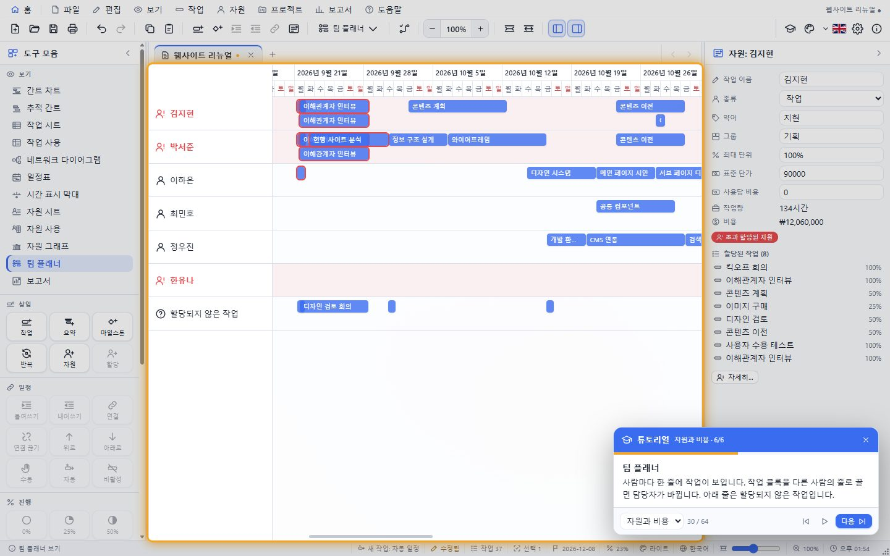
Resource › Team Planner shows one lane per person with their task blocks. Drag a block to another person's lane to reassign it, or from the Unassigned tasks lane at the bottom to assign it. Overallocated lanes are marked red.
Tracking progress
Baselines
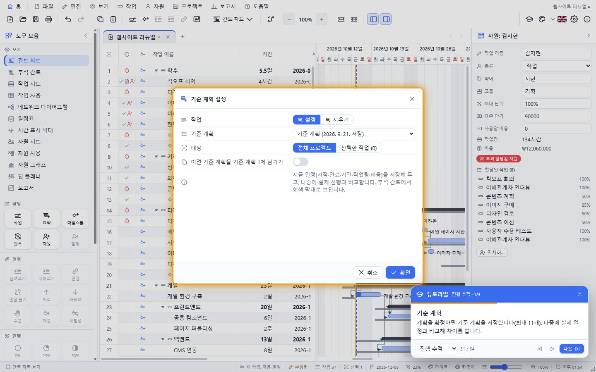
When the plan is agreed, Project › Set baseline… saves the current schedule (start · finish · duration · work · cost).
- Up to 11: Baseline and Baseline 1–10. The list shows when each was saved.
- For: Entire project or the selected tasks.
- When saving the Baseline again, Keep the previous baseline as Baseline 1 keeps the old one.
- Clear baseline… removes a saved baseline (the schedule does not change).
- Variances (start, finish, duration, work, cost) and the gray Tracking Gantt bars compare with Baseline (number 0).
% complete
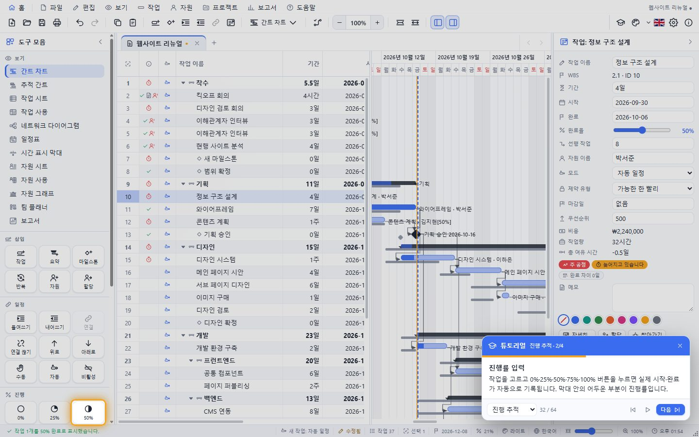
Select tasks and press 0% complete · 25% complete · 50% complete · 75% complete · 100% complete (Task menu, Progress section of the Tools panel). Actual start and finish are recorded automatically and the dark part inside the bar shows the progress. The bar's progress handle and the slider in the properties panel change it too.
Mark on track sets the selected tasks to the progress they should have at the status date.
Update tasks
Task › Update tasks… (one task selected) enters % complete, actual duration, remaining duration, actual start and actual finish in detail.
Update project
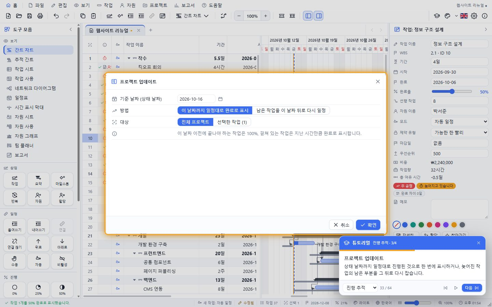
Project › Update project…
| Field | Contents |
|---|---|
| Through (status date) | This date becomes the project's status date |
| Set complete as scheduled through this date | Tasks that should have finished by the date become 100%; tasks spanning it are marked complete for the time passed |
| Reschedule uncompleted work after this date | Tasks not started that should have started before the date move to start after it |
| For | Entire project or the selected tasks |
Status date
The status date is the day progress is judged against (late tasks, progress line, reports, update project). Set it with Project › Status date… (the Status tab of Project information); without one, today is used. A task that should be further along by the status date is a late task and shows "Running late" in the indicators column.
Tracking Gantt and progress line
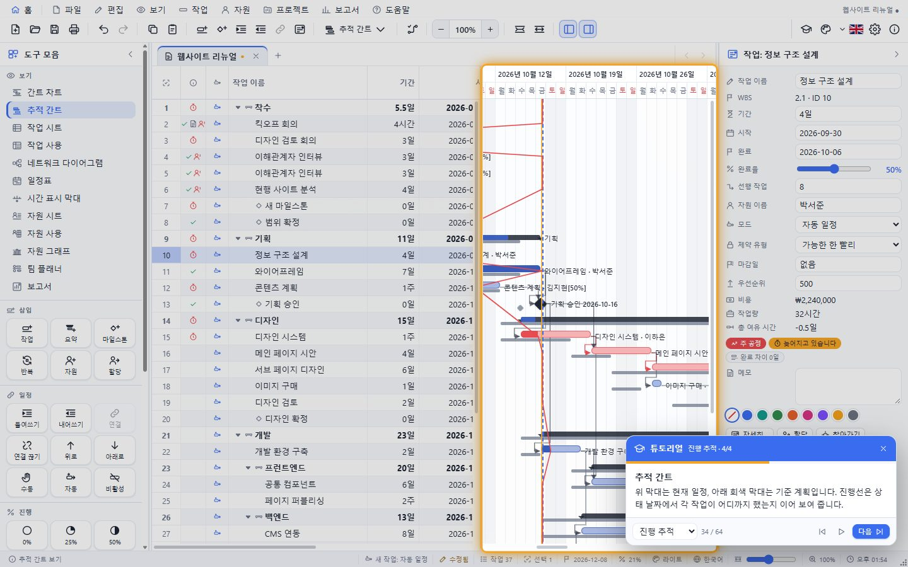
The Tracking Gantt view draws the current schedule on top and the baseline as a gray bar below. View › Show progress line connects how far each task got at the status date; a line bending to the left marks a late task. In the Gantt Chart, Show baseline bars shows the baseline too.
Views
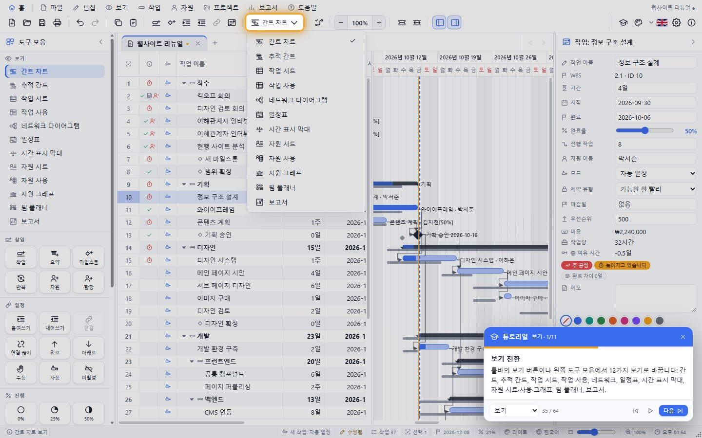
Switch between the 12 views with the toolbar view button (current view name ▾), the Tools panel or the View menu. Each tab remembers its view; the first view of new projects is set in Settings › General › Default view of new projects.
Gantt Chart
The task table on the left, the Gantt chart on the right, a splitter between them. The chart has a two-tier timescale, shaded non-working time, the today and status-date lines, link arrows, deadlines, baseline bars and slack lines. Settings › Gantt chart › Text next to bars picks Name · Resources · % complete · None. See The sample project for a picture.
Tracking Gantt
Compares the current schedule with the baseline. See Tracking Gantt and progress line.
Task Sheet
The table alone, full width — handy for wide tables (Cost, Tracking, Variance…).
Task Usage
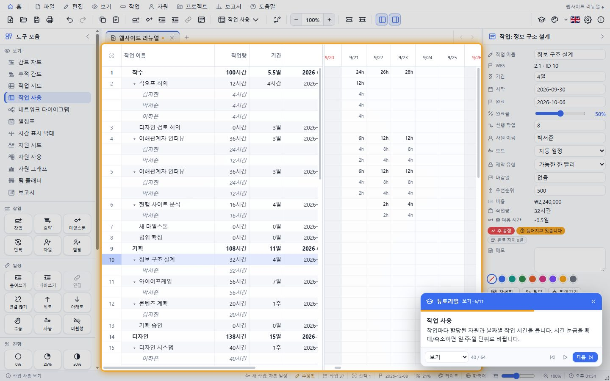
Each task with its resources below it and the hours per day on the right. Zooming the timescale switches between days, weeks and months.
Network Diagram
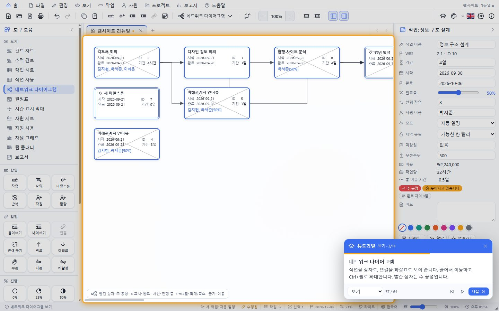
Tasks as boxes (ID, name, dates, duration, resources), links as arrows. Red boxes are critical, X marks a finished task, a slash one in progress. Drag to move around, Ctrl+wheel to zoom, double-click a box for Task information.
Calendar
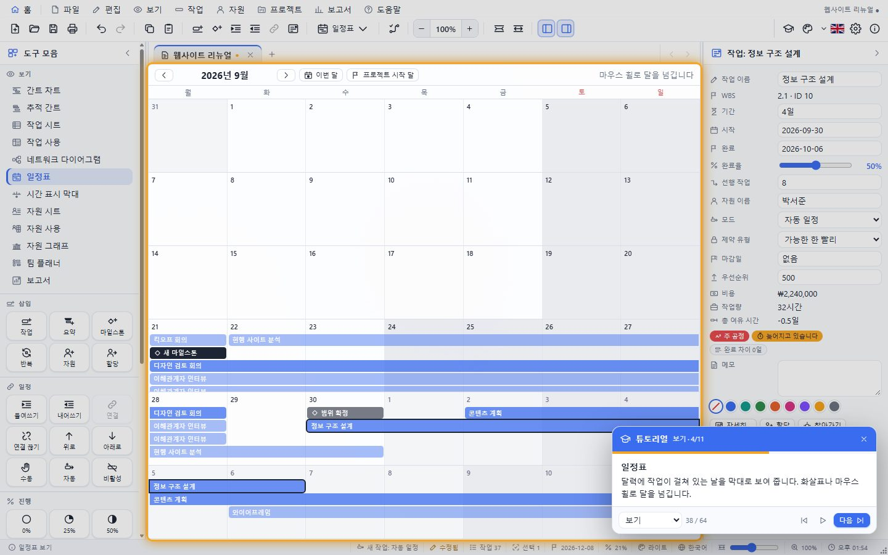
A month calendar with bars over the days each task runs. Previous month · Next month · This month · Project start month or the mouse wheel turn the months. Weeks with too many tasks show "+N".
Timeline
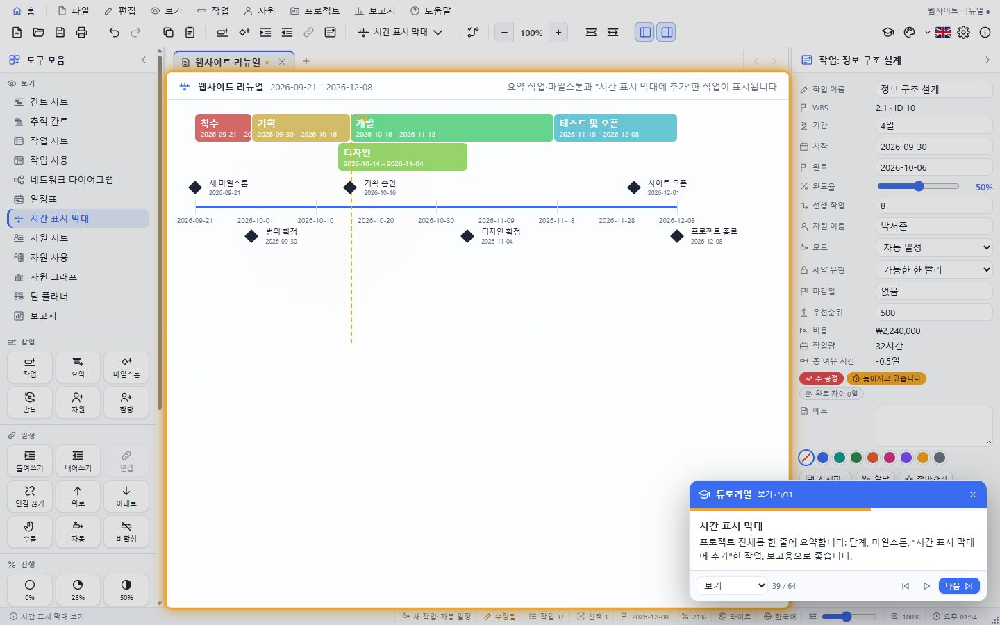
The whole project on one line: top-level summary tasks (phases) as bars, milestones as diamonds and tasks added with Add to timeline as call-outs — good for reporting.
Resource Sheet
The resource table. See Resource Sheet.
Resource Usage
Each resource with its assignments and hours per day; periods over the limit are red. See Overallocation.
Resource Graph
Pick a resource on the left to see its work per day (columns) against its availability (line). Max. units · peak · total work are summed up at the top, and per day · per week switch the scale. Only work resources are graphed.
Team Planner
Task blocks in one lane per person; drag them to reassign. See Team Planner.
Reports
Dashboards built from the schedule. See Reports.
Tables, columns, filters, groups, sorting and find
Tables (column sets)
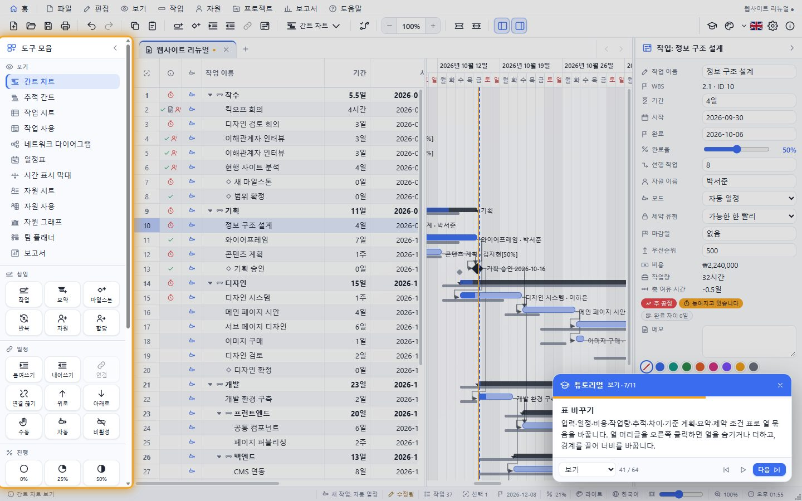
Switch the column set with View › Table (column set) or the Table list in the Tools panel.
| Table | Columns |
|---|---|
| Entry | Indicators, Mode, Task Name, Duration, Start, Finish, Predecessors, Resource Names |
| Schedule | Start, Finish, Late Start, Late Finish, Free Slack, Total Slack |
| Cost | Fixed Cost, Cost, Baseline Cost, Cost Variance, Actual Cost, Remaining Cost |
| Work | Work, Baseline Work, Work Variance, Actual Work, Remaining Work, % Complete |
| Tracking | Actual Start, Actual Finish, % Complete, Actual Duration, Remaining Duration, Actual Cost, Actual Work |
| Variance | Start, Finish, Baseline Start, Baseline Finish, Start Variance, Finish Variance |
| Baseline | Baseline Duration, Baseline Start, Baseline Finish, Baseline Work, Baseline Cost |
| Summary | WBS, Duration, Start, Finish, % Complete, Cost, Work |
| Constraint dates | Duration, Constraint Type, Constraint Date, Deadline, Priority, Task Type |
The Resource Sheet has Entry · Cost · Work · Summary tables.
Choosing columns
- View › Choose columns…: reorder (Move up / Move down) and hide the Columns shown on the left, add from the Available columns on the right, or go back with Default columns. Each table keeps its own columns.
- Right-click a column header to sort, Hide this column or Reset column width.
- Drag a column border to resize it; double-click it to fit the content.
Filters and highlighting
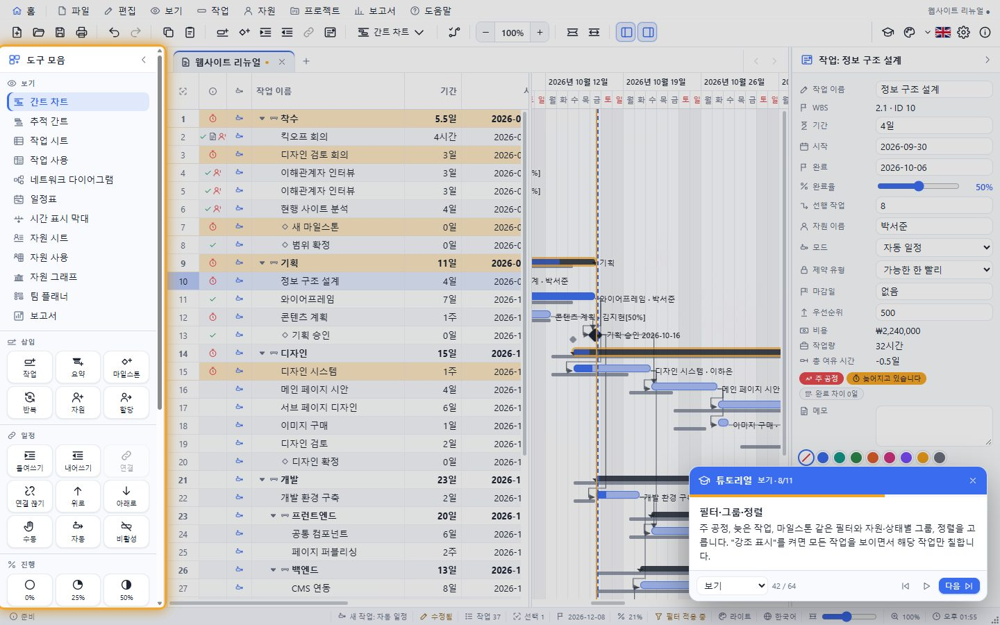
View › Filter or the Filter list in the Tools panel:
All tasks · Active tasks · Completed tasks · Incomplete tasks · Critical tasks · Milestones · Summary tasks · Late tasks · Overallocated tasks · Unstarted tasks · Tasks in progress · Tasks with deadlines · Tasks with constraints · Manually scheduled tasks · Date range… · Using resource…
- The summary tasks above every match stay, so the outline still reads.
- Highlight instead of filter keeps every task visible and colours the matches.
- The Search box in the Tools panel filters by task name, notes and resource names as you type.
- While a filter is on, the status bar shows Filter on. Clear filter, group and sort removes them all.
Groups and sorting
- Group: No group · Critical · Milestones · Priority · Resource · Status · Duration · % Complete · Constraint type · Task mode. Each group heading shows its count.
- Sort: By ID (default) · By name · By start date · By finish date · By duration · By priority · By cost · By work · By slack.
Find, replace, go to
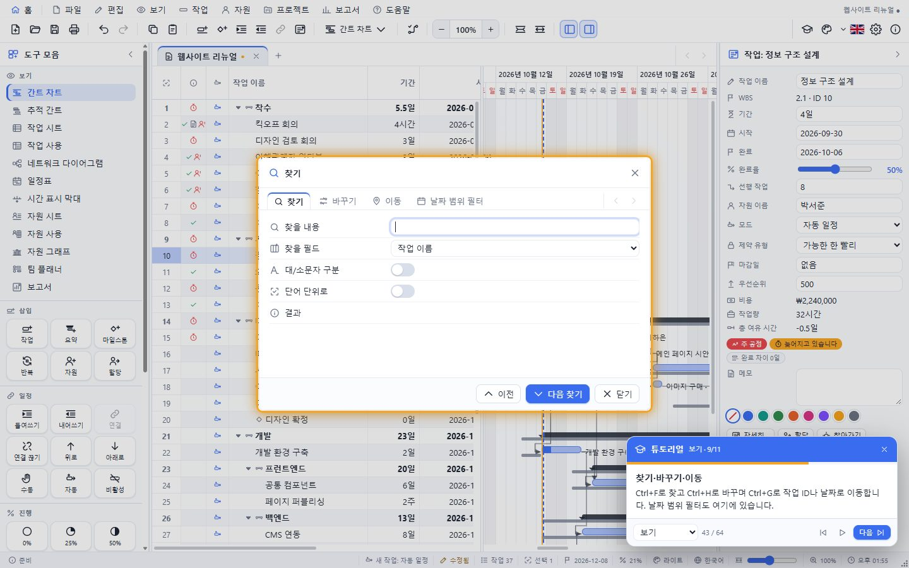
The Find window has four tabs.
| Tab | Shortcut | Contents |
|---|---|---|
| Find | Ctrl+F | Find what, Field (Task Name · Notes · Resource Names · Text1–3 · Hyperlink), Match case, Whole words, Previous · Find next |
| Replace | Ctrl+H | Replace with and Replace all (undone in one step) |
| Go to | Ctrl+G | Go to a task ID or a date |
| Date range filter | Show only the tasks spanning From–To |
The window can stay open while you keep searching.
Reports
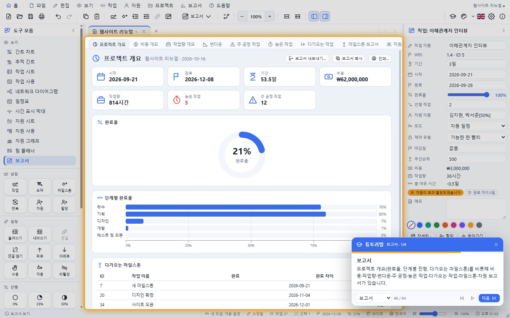
Pick a report from the Report menu or the list in the Reports view. Reports are judged at the status date.
| Report | Contents |
|---|---|
| Project overview | % complete, late and critical task counts, progress by phase, upcoming milestones |
| Cost overview | Cumulative cost (baseline · scheduled · actual), cost by phase (lower bar: baseline), cost by resource |
| Work overview | Work by resource, work by week |
| Burndown | Remaining work: remaining as scheduled (blue line) and actually remaining (green line) |
| Critical tasks | Tasks with no slack: a delay in any of them delays the project finish |
| Late tasks | Tasks behind their schedule at the status date |
| Upcoming tasks | Tasks starting within two weeks of the status date |
| Milestone report | All milestones and their variance against the baseline |
| Resource overview | Work, cost, peak and overallocation per resource |
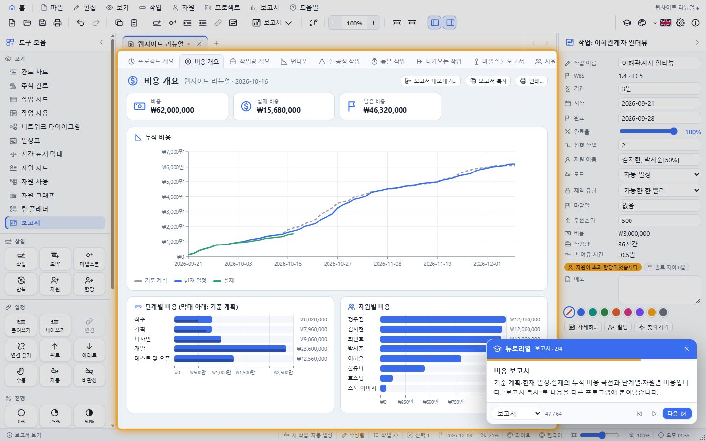
Copy report puts the report on the clipboard as text, ready to paste into a spreadsheet or document. Print… on the report screen opens the print preview (it prints the task table and Gantt chart).
Export report saves the report you are looking at as a file. Pick the format from the Report › Export report submenu, the Export report… button in the report header, or the right-click menu on an empty part of the report.
| Format | What you get |
|---|---|
| HTML (.html) | A single-file web page that opens in any browser. Charts are SVG pictures; open Value under a chart to see its numbers. Good for mail attachments and wikis. |
| Markdown (.md) | Headings and GitHub tables; charts become tables of their numbers. For Git repositories, issues and note apps. |
| Word (.docx) | An A4 Word document with headings, bordered tables (the header row repeats on every page) and the charts as pictures plus their numbers, in Malgun Gothic. Edit it in Word, Hancom Office or LibreOffice. |
| PDF (.pdf) | The report drawn on A4 pages. The pages are stored as pictures so Korean text looks the same everywhere without embedding a font, which also means the text cannot be selected or copied. |
The suggested file name is "project title - report name", and the progress popup appears when building the file takes a while.
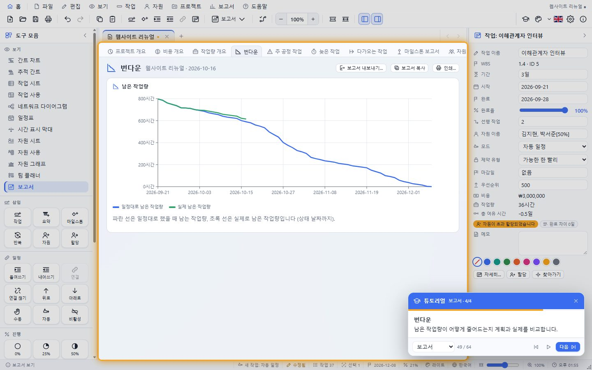
Files
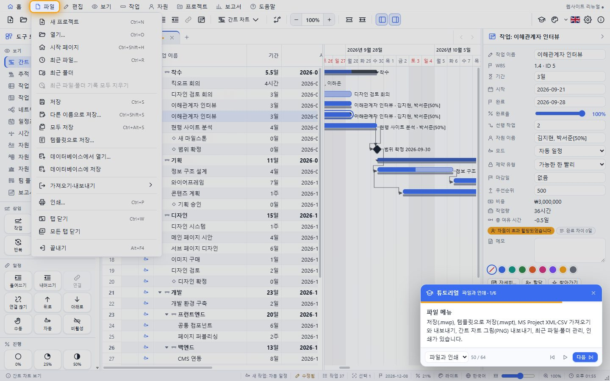
Saving
- Save (
Ctrl+S) writes a MyWorkPlan project file (.mwp). The first save, and projects started from a template or an import, ask for a file name. - Save as… (
Ctrl+Shift+S), Save all (Ctrl+Alt+S: every modified tab). - Files are written to a temporary file first and then swapped in, so a problem while saving never breaks the original. Large files show a progress window.
- With Settings › General › Reopen last files when starting on, the files that were open are opened again on the next start.
Templates
File › Save as template… writes a .mwpt file without progress (% complete, actual dates), baselines, status date and leveling delays. Opening a template creates a new untitled project that asks for a new .mwp name when saved.
Import and export
| Command | Format | Notes |
|---|---|---|
| Import (MS Project XML · CSV)… | .xml (MS Project XML), .csv · .tsv · .txt | Reads tasks, outline, links, lags, constraints, calendars, resources, assignments and baselines. CSV headers may be English or MS Project's Korean names. An imported project becomes a .mwp when saved |
| Export to MS Project XML… | .xml | MSPDI, opens in Microsoft Project 2010 and later |
| Export to CSV… | .csv | UTF-8 (BOM), English headers: ID, WBS, Name, Outline Level, Duration, Start, Finish, Predecessors, Resource Names, % Complete, Cost, Work, Milestone, Notes |
| Export Gantt chart as picture (PNG)… | .png | The table (name, duration, start, finish) and the whole Gantt chart in one picture |
Open… (Ctrl+O) opens XML and CSV files too.
Recent files and folders
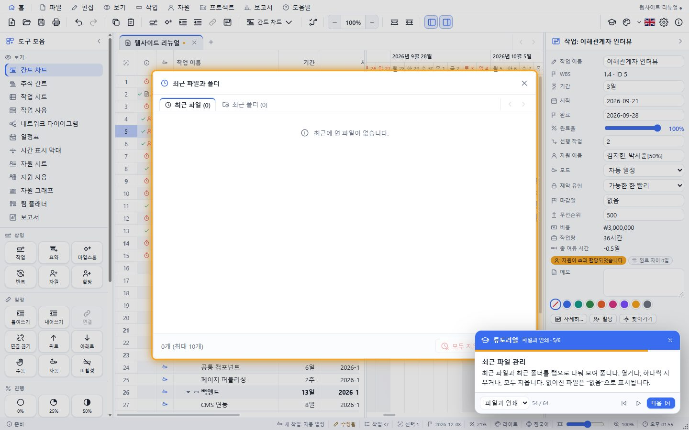
- File › Recent files… (
Ctrl+R) opens a window with Recent files and Recent folders tabs, up to 10 of each. - Each entry has Open (folders: Open from this folder) and Remove from the list; Clear all · Clear all folders remove them all.
- Files that no longer exist are marked Missing; opening one asks whether to remove it from the list.
- File › Recent folders lists the folders as a menu, and Clear all recent files and folders clears both lists.
- The start page and Settings › Recent manage the same lists.
Drag and drop
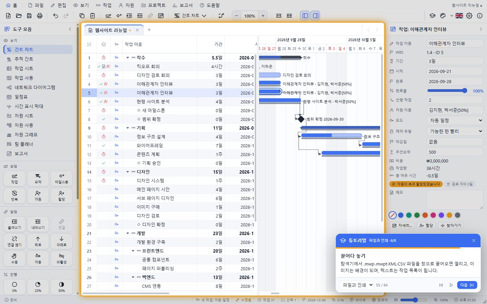
Drag files from the file manager onto the window:
| Dropped | Result |
|---|---|
.mwp · .mwpt · .json | Opened as a project |
.xml · .csv · .tsv · .txt | Imported |
| Images (png · jpg · gif · webp · bmp · svg …) | Become the background image |
| Text (web version) | Added as tasks, one per line |
Double-clicking a .mwp or .mwpt file opens it in MyWorkPlan too (the installer registers the file types). Opening a file that is already open switches to its tab.
Unsaved changes
- Closing a tab (
Ctrl+W) with unsaved changes asks Save · Don't save · Cancel. - Exiting (File › Exit, closing the window) lists the unsaved projects and asks the same.
- Only collapsing or expanding summary tasks does not count as a change.
Database
Plans can be kept in a database instead of files (desktop app only — a web browser cannot connect to a database, so the web version hides these commands).
Connection settings
Choose in Settings › Database.
| Setting | Meaning |
|---|---|
| Database type | None · SQLite · MariaDB · MySQL · PostgreSQL |
| SQLite file | For SQLite. Browse… picks an existing file or names a new one, which is created on the first connection |
| Server (host) · Port · Database name · User | For a database server. Without a port of your own MariaDB/MySQL use 3306 and PostgreSQL 5432. The database itself must exist |
| Password | Not saved by default: remembered until the app closes. Turn on Save the password in the settings to store it with the settings |
| Test connection | Connects, shows the server version and creates the table myworkplan_plans when it is missing. A failure shows the reason (never the password) |
Saving and opening
- File › Save to database stores the active plan with exactly the content of its
.mwpfile. Saving the same plan (same project ID) again replaces it. A plan opened from the database without a file counts as saved afterwards. - File › Open from database… lists the stored plans (title · last saved · size, newest first). Open opens one in a new tab; the bin button deletes it from the database (after asking; this cannot be undone).
- Without a connection set up, both commands open the Database tab of the settings.
Printing and preview
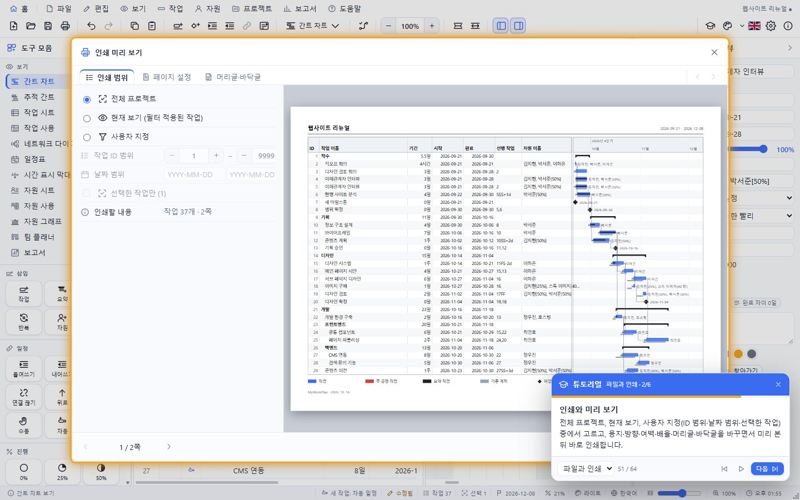
File › Print… (Ctrl+P) opens the Print preview window. The preview on the right follows every change; the arrows at the bottom turn the pages.
| Tab | Fields |
|---|---|
| What to print | Entire project · Current view (filtered tasks) · Custom (task ID range, date range, selected tasks only), and To print (tasks and pages) |
| Page setup | Paper, orientation (portrait / landscape), margins (narrow · normal · wide), scale (50–150%), content (Table + Gantt chart · Table only · Gantt chart only), legend |
| Header and footer | Header and footer on/off and their text |
Print opens the system print dialog (Save as PDF lives there too). Prints are black on white whatever the theme; the timescale fits the page width and rows continue on the following pages. The page setup is kept for the next time.
Customizing
Themes
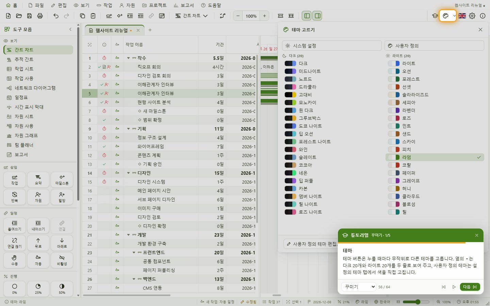
- The Random theme toolbar button picks a different theme at random on every press; its tooltip names the current theme.
- The ▾ next to it (Choose theme) opens a window with Dark (20) and Light (20) in two columns, plus System setting (follows the OS) and Custom at the top.
- Settings › Theme tab: Dark 20 · Light 20 · Custom groups. Custom lets you change Background · Surface · Panel · Text · Dim text · Border · Accent · Text on accent · Striped rows · Chart background · Toolbar · Status bar one by one, with Copy the current theme's colors and a Dark theme switch. Low contrast shows the warning "Text may be hard to read".
Language
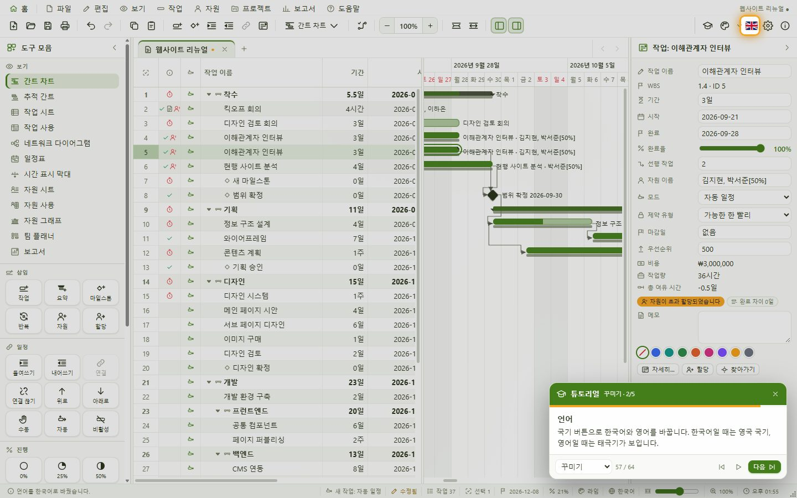
The flag button on the toolbar (Switch language, Ctrl+Shift+L) switches between Korean and English: the UK flag shows while the UI is Korean, the Korean flag while it is English (press it to switch to that language). Settings › General › Language works too. Menus, popups, reports, error messages and backend messages all switch.
Font
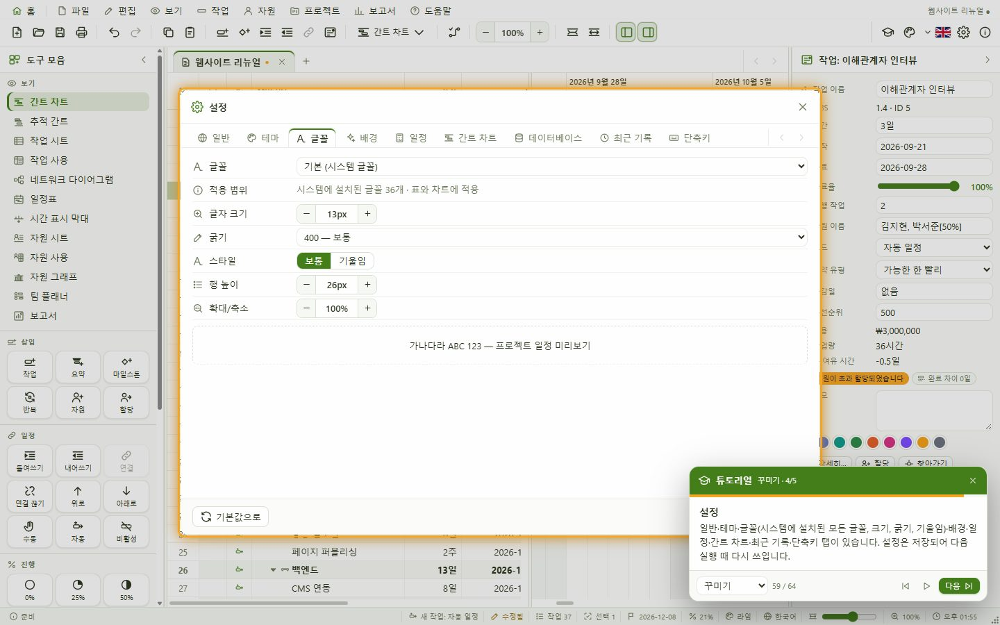
Settings › Font picks any font installed on the system and sets Size, Weight (Light … Extra bold), Style (Normal / Italic), Row height and Zoom. The font applies to the tables and charts and the sample below shows it at once.
Background and moving background
Settings › Background tab:
| Field | Contents |
|---|---|
| Background | Moving · Image · None |
| Moving background | Aurora · Waves · Particles · Constellation · Bubbles · Flowing grid · Gantt bars · Star field, Change moving background (Ctrl+Shift+B, random) |
| Motion speed | 0–300% |
| Moving background on the start page only | When on, nothing moves behind the views |
| Background image | Choose… · Remove. Images of any size can be used; dropping an image file on the window also makes it the background |
| Background opacity (behind views) | How strongly the background shows behind the views |
| Fit | Fill · Fit · Tile · Center · Stretch |
View › Turn background off removes the background image. Background colours follow the theme.
Panels
- Collapse and expand the Tools and Properties panels with the arrow in their header, View › Show/hide tool panel (
Ctrl+Shift+1) · Show/hide properties panel (Ctrl+Shift+2) or the toolbar buttons. - Collapsed, a panel leaves a narrow rail with icons and a title; the Expand button is at the top. The rail still switches views and runs the main commands.
- Drag the separators to change the panel widths.
Zoom and timescale
- Zoom (50–200%):
Ctrl+mouse wheel,Ctrl+=·Ctrl+-·Ctrl+0, or the toolbar[−] 100% [+](the value can be typed). - Timescale:
Ctrl+mouse wheelover the chart,Ctrl+Shift+=·Ctrl+Shift+-, the toolbar buttons or the status bar slider; it moves between days, weeks, months and quarters. - Entire project fits the whole project to the chart width; Go to today scrolls to today.
- Move the chart by dragging an empty area or with
Ctrl+drag.
Status bar
Hide or show it with View › Status bar or in Settings › General. Settings › General › Clock on the status bar turns the clock off.
The Settings window
Help › Settings… (Ctrl+,). Settings apply at once and are kept for the next start. Defaults puts every setting back (the language and the background image stay).
| Tab | Fields |
|---|---|
| General | Language, date format (ISO · Korean · US · European), Show times with dates, Default view of new projects, Show the start page when starting, Reopen last files when starting, Ask before deleting, Clock on the status bar, Status bar, Last folder used, Start the tutorial |
| Theme | Dark · Light · Custom, System setting |
| Font | Font, size, weight, style, row height, zoom |
| Background | Background, moving background, motion speed, background image, background opacity, fit |
| Schedule | Hours per day, Hours per week, Days per month, Mode of new tasks |
| Gantt chart | Show critical path · slack · baseline bars · progress line, Show link lines, Show the today line, Shade non-working days, Text next to bars |
| Recent | Recent files and folders, clearing them |
| Shortcuts | Every keyboard shortcut |
Keyboard shortcuts
The same list is in Settings › Shortcuts (or Help › Keyboard shortcuts…), and the menus show the shortcuts next to each command. On macOS use Cmd instead of Ctrl.
| Shortcut | Command |
|---|---|
Ctrl+N | New project |
Ctrl+O | Open |
Ctrl+S | Save |
Ctrl+Shift+S | Save as |
Ctrl+Alt+S | Save all |
Ctrl+R | Recent files |
Ctrl+W | Close tab |
Ctrl+P | |
Ctrl+Z | Undo |
Ctrl+Y | Redo (Ctrl+Shift+Z works too) |
Ctrl+X | Cut |
Ctrl+C | Copy |
Ctrl+V | Paste |
Ctrl+D | Fill down |
Delete | Delete |
Ctrl+A | Select all |
Esc | Clear selection |
Insert | Insert task |
Ctrl+Shift+M | Insert milestone |
Ctrl+Shift+K | Insert summary task |
Alt+Shift+→ / ← | Indent (make subtask) / Outdent |
Alt+Shift+↑ / ↓ | Move up / Move down |
Ctrl+F2 | Link tasks |
Ctrl+Shift+F2 | Unlink tasks |
Shift+F2 | Information (task, resource, link) |
Alt+F10 | Assign resources |
F2 / Enter | Edit cell |
Ctrl+F | Find |
Ctrl+H | Replace |
Ctrl+G | Go to |
Ctrl+= / Ctrl+- | Zoom in / Zoom out |
Ctrl+0 | Zoom to 100% |
Ctrl+mouse wheel | Zoom in / out (the timescale over a chart) |
Ctrl+Shift+= / - | Zoom in timescale / Zoom out timescale |
Ctrl+drag | Move charts and diagrams |
F9 | Calculate now |
Ctrl+Tab | Next tab (Ctrl+Shift+Tab: previous tab) |
Ctrl+Shift+L | Switch language |
Ctrl+Shift+B | Change moving background |
Ctrl+Shift+H | Start page |
Ctrl+, | Settings |
F11 | Tutorial |
F1 | About |
Shortcuts that work but are not in the Settings list:
| Shortcut | Command |
|---|---|
Ctrl+Shift+R | Add resource |
Ctrl+Shift+1 · Ctrl+Shift+2 | Show/hide tool panel · properties panel |
Ctrl+Shift+F5 | Scroll to task |
Ctrl+Q (macOS) · Alt+F4 (Windows) | Exit |
Tab · Shift+Tab (editing a cell) | Next · previous cell |
Ctrl+Home · Ctrl+End | First · last row of the table |
Esc (during the tutorial) | End the tutorial |
Troubleshooting
Error windows
Errors open an Error window with the message, Time, Where (what was being done), App (version and platform) and Details. Copy details copies everything, ready to report or keep.
| Error title | Common causes |
|---|---|
| The file could not be opened | Not a MyWorkPlan file, made by a newer version, not a Microsoft Project XML file, a CSV without tasks |
| Could not save · Could not export | A folder without write permission, another program holds the file |
| Input error | A duration, date or predecessor in the wrong form (the message gives examples), a link loop |
| Could not print | A printer or print dialog problem |
| The user's guide could not be opened | The docs folder of the installation was removed |
Serious errors and crash.log
A serious error inside the program (the backend) opens Serious error (backend) with the location, thread, backtrace and the Log file path. The same text is appended to crash.log.
| OS | crash.log |
|---|---|
| Windows | %APPDATA%\com.shkwon.myworkplan\crash.log |
| macOS | ~/Library/Application Support/com.shkwon.myworkplan/crash.log |
| Linux | ~/.local/share/com.shkwon.myworkplan/crash.log |
"Already running" error
Only one MyWorkPlan runs per user. Starting it again shows MyWorkPlan — Start error with "MyWorkPlan is already running." and the new copy closes. Find the open window on the taskbar (Dock); File › Open… there opens other projects as tabs. Even after a crash the OS releases the lock, so the next start is never blocked.
Other problems
| Symptom | Fix |
|---|---|
| The schedule looks wrong | Check the indicators column and the conflicts on the status bar, review constraints in the Constraint dates table, and check that the task is not manually scheduled |
| Tasks are missing | Check filters, the search box and collapsed summary tasks; press Clear filter, group and sort |
| Everything is too big or too small | Ctrl+0 (Zoom to 100%) |
| Back to the original settings | Settings › Defaults |
| A recent file does not open in the web version | The browser may require picking the file again with Open |
Installing and removing
Windows
Run MyWorkPlan-Setup-1.0.0.exe.
- Choose the installer language (한국어 / English).
- If a previous installation left saved data (settings, recent files and folders, background image), you are asked whether to delete it. No keeps it.
- A previous installation is removed completely before the new one goes in.
.mwp(project) and.mwpt(template) files are registered with their own document icons and open with a double-click.- The MyWorkPlan Start-menu folder gets the program and a MyWorkPlan User's Guide shortcut (this guide). The guides, the tutorial document and the sample projects are in the
docsandsamplesfolders of the installation.
It installs for the current user, without administrator rights. Remove it in Settings › Apps (or Control Panel › Uninstall a program).
| Data | Location (Windows) |
|---|---|
| Settings, recent files and folders | %LOCALAPPDATA%\com.shkwon.myworkplan (WebView2 storage) |
| Window position and size, background image, crash.log | %APPDATA%\com.shkwon.myworkplan |
macOS
Open MyWorkPlan-1.0.0-<arch>.dmg and drag MyWorkPlan into Applications. Remove it by moving it to the Trash. macOS 11 or later is required.
Linux
Use the .deb (Debian, Ubuntu), .rpm (Fedora…) or .AppImage. The deb and rpm packages register the .mwp and .mwpt file types and icons. Remove it with the package manager.
Web version
Put the web build (dist/) on any static web server and use the same features in a browser. Differences:
- Files are opened with the browser's file picker; saving goes back to the same file in browsers with File System Access (Edge, Chrome) and is a download elsewhere.
- Popups float inside the page.
- Features that need the OS — file type registration, the "already running" check — are desktop only. The system font list is read only when the browser allows it.
- Settings and recent history stay in the browser's storage.